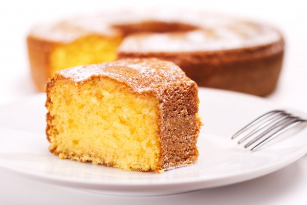

HOME
Yogurt Cake

Description:
Yummy easy yogurt cake to make at home!
For 6 people
Ingredients:
- 1x bag of baking powder
- 1x pot of flower
- 1/2x pot of sugar
- 1/2x pot of oil
- 10g of butter
- 3x eggs
- 1x yogurt
- 1x bag of vanilla sugar
Steps:
- In this order, add a pot of plain yogurt, the flour, the sugar, and the vanilla sugar. Mix well.
- Add the 3 eggs and mix again.
- Add the oil, mix, and then add the packet of baking powder.
- Mix again until the batter is smooth.
- Butter a round cake tin and pour in the batter.
- Bake for 30 minutes at 180°C (thermostat 6), checking regularly.
Other recipes : Cookies or Popsicle